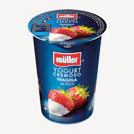

Yogurt alla fragola

Ricetta per yogurt a fragola
Lo yogurt a fragola è un ottimo spuntino,
utile per fare una dieta o boh non lo so...
Ingredienti:
- Latte
- fragole
- zucchero
- bbbbbbbbb
- ddssdssdsdsdsd
preparazione
- Versare il latte in una ciotola
- versare lo zucchero
- iniziare a ddfdfdf
- sdsjfkdfjkdjfdkfjkdjf
- aggiungere le fragole